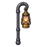
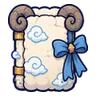
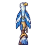
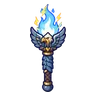

ภูตพายุหิมะ
มอนธาตุลม Lv 46–57
เจอที่
| แมพ | โซน | Lv | ภูมิภาค |
|---|---|---|---|
| ยอดเขาหมอกเหนือ | 46–52 | ดินแดนเหนือ | |
| ยอดเขาหมอกเหนือ | สันเขาพายุหิมะ | 54–56 | ดินแดนเหนือ |
| หอดูดาวนกฮูก ชั้น 3 · โดมดาว | 55–57 | ดินแดนเหนือ | |
| ป่าสนหิมะ | 46–53 | ดินแดนเหนือ | |
| ธารน้ำแข็งแตก | 46–53 | ดินแดนเหนือ | |
| สันเขาหิมะถล่ม | 46–53 | ดินแดนเหนือ | |
| หอรากมืด (Dark Root) | รากกินดาว | 71–80 |
ค่าสถานะตามเลเวล
| Lv | HP | ATK | DEF | MDEF | EXP | Job |
|---|---|---|---|---|---|---|
| 46 | 8,031 | 99–148 | 9 | 17 | 64 | 48 |
| 51 | 10,653 | 109–163 | 10 | 18 | 70 | 53 |
| 57 | 14,198 | 121–181 | 11 | 21 | 78 | 59 |
ตีด้วยธาตุไหนดี
แรงขึ้น: ดิน ×1.5 พิษ ×1.25
เบาลง: น้ำ ×0.5 ลม ×0.25
วัตถุดิบที่ดรอป
| ของ | โอกาส | |
|---|---|---|
| เมฆพายุในขวด | 50% | 1 ชิ้น (15% ได้ 2) |
อุปกรณ์ที่ดรอป (4)
| ของ | โอกาส |
|---|---|
 ตะเกียงรั้วทองเหลือง | 0.25% |
 คัมภีร์ขนแกะเมฆ | 0.12% |
 ลูกซองอินทรีพายุ | 0.12% |
 คบเพลิงอินทรีพายุ | 0.06% |
สกิล
ยิงกระจาย (Lv 25+) · ยิงกระจาย (Lv 60+) · หลบ (Lv 60+)